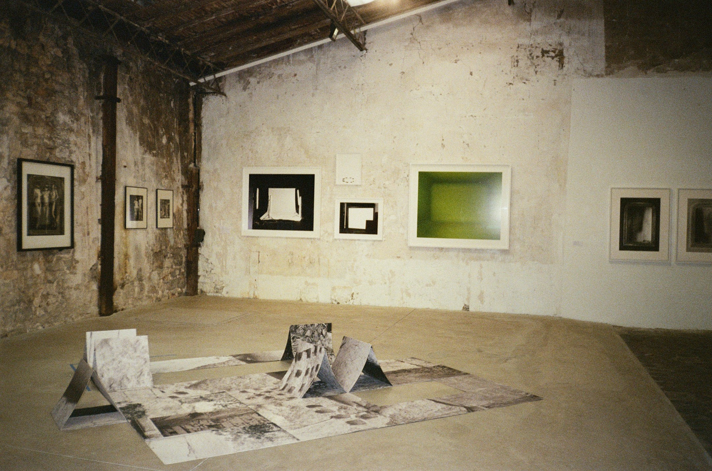
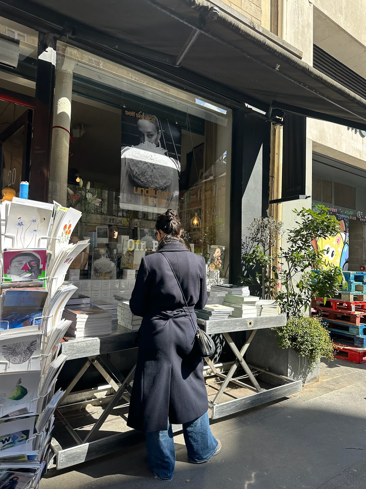
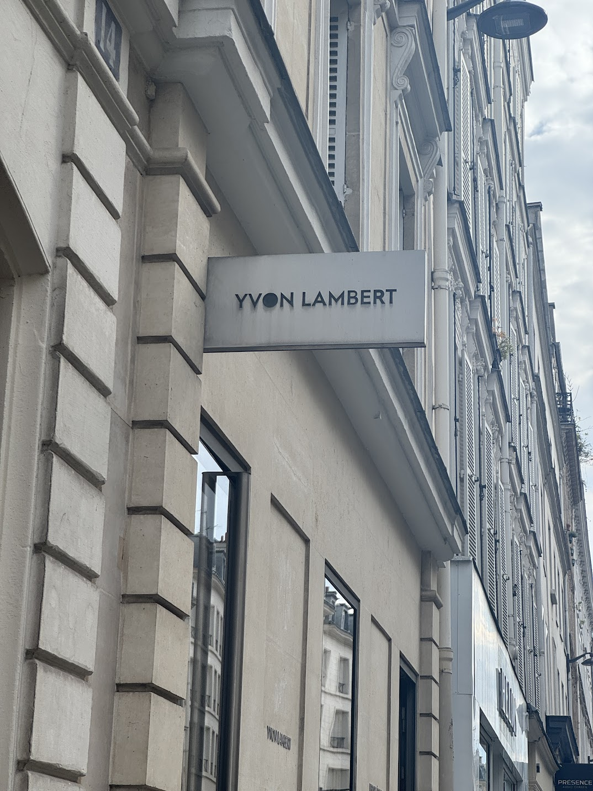
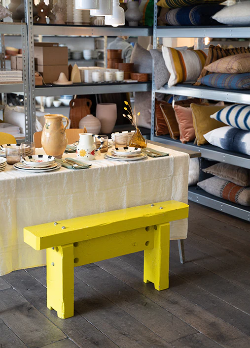
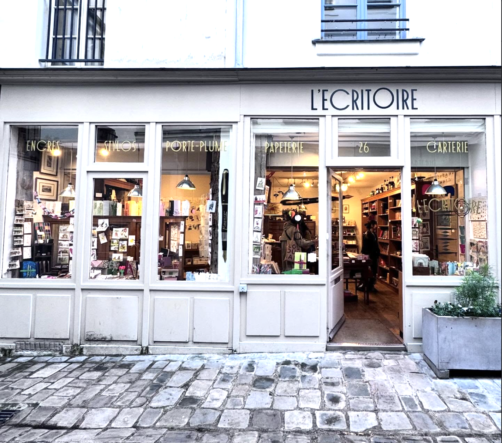
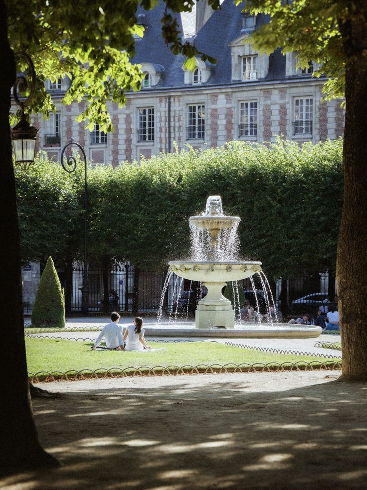

Cities / Paris
The bookshops, boutiques, and places to walk slowly. Paris reveals itself to the people who aren't in a rush. Like the Baudelaire militated, this is an invitation to be a Flâneur, to walk as a form of art, and a resistance to the frantic pace of consumerist life.

Bookshops
OFR.
3rd arr.
20 rue Dupetit-Thouars
Marais
OFR has been a fixture of the Marais creative scene since the mid-nineties — part bookshop, part gallery, part publisher, part lifestyle. The shelves hold art books, photography monographs, independent magazines, and OFR-exclusive zines you won't find elsewhere. There's a 60-square-metre gallery in the back that rotates exhibitions regularly. Don't take photos inside — there's a sign. Just browse slowly, and give yourself more time than you think you'll need. Also, the merch is super cute if you want to support a local librarie!

Librairie Yvon Lambert
3rd arr.
Marais
Another one of my most favorite places in Paris, and it all begins with the people that run it. I had the pleasure to meet Monsieur Yvon Lambert, the bookshop is now run by his son and the fabulous staff, but, he still lingers on the stools of the library. If you see hiim, I invite you to chat with him, and ask as many questions as we can! An art bookshop in the Marais stocked with catalogues, artist monographs, and photography books you won't find anywhere else. Browsing here feels more like visiting a gallery than shopping — which is, of course, the whole idea. Allow an hour and leave lighter in pocket but considerably richer in everything else.

Shops
Merci
3rd arr.
111 bd Beaumarchais
Marais
A concept store that somehow avoids feeling like one — spread across a townhouse with a used-book basement café that's worth the visit on its own. The edit is thoughtful: French ceramics, Scandinavian linens, niche perfume, labels you'll want to know. Part of the proceeds go to charitable causes, which Merci manages to mention without making a fuss about. The café downstairs is a genuinely good place to sit and do nothing for an hour. Plus they openend a second store that's just as good! Check it out. Photo courtesy of Merci Paris.

L'Écritoire
3rd arr.
26 passage Molière
Marais
A family-run stationery shop tucked into a covered passage in the Marais, open since 1975 and now in its third generation. The shelves hold fountain pens, coloured inks, wax seals, handmade notebooks, and envelopes in every shape imaginable — things that make you want to write letters again. One of those shops that makes Paris feel like it's still protecting something worth protecting. Photo courtesy of L'Ecritoire via Instagram.

Places
Place des Vosges
4th arr.
Marais
The oldest planned square in Paris, built in 1612, and still the most beautiful. The arcades are cool in summer, the proportions are perfect in every season, and the central garden — with its fountains and clipped linden trees — manages to feel both formal and completely relaxed. Come on a weekday when the school groups haven't arrived yet, sit on the grass, and try to remember why you ever thought you needed to be anywhere else.
